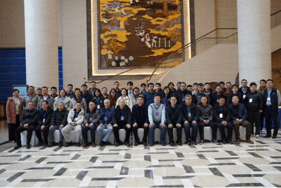
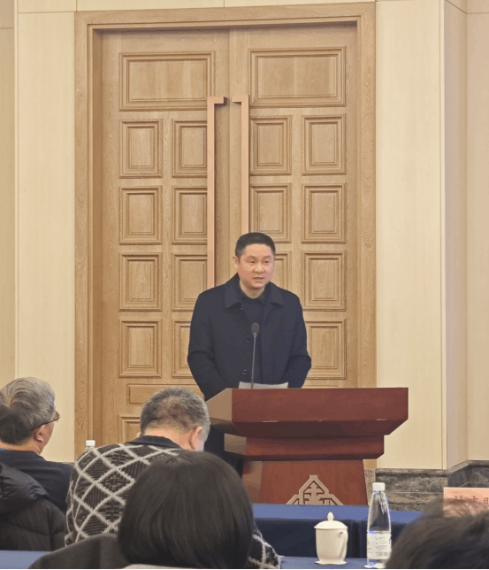
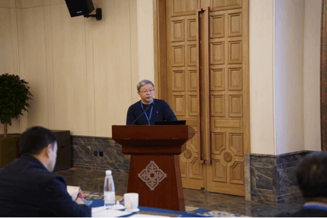
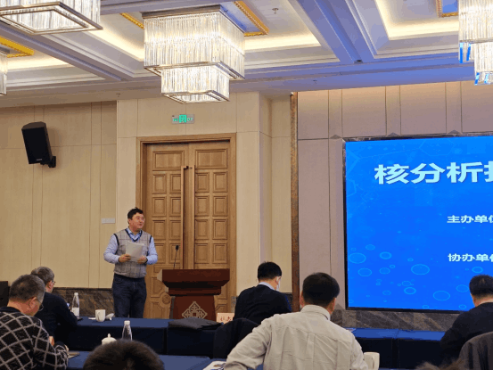

龙年之首、佳节将近， 01月27日上午，由兰州大学稀有同位素前沿科学中心与南京高淳高新技术产业开发区管理办公室主办，中南兰信辐射技术研究院协办的首届“核分析技术及仪器开发研讨会”在南京高淳举行。
首届核分析技术及仪器开发研讨会成功举办


高淳高新区管理办公室主任马启顺发表会议致辞，对与会专家、学者及各位嘉宾的到来表示热烈欢迎，并对高淳区历史沿革、区域优势、区创新政策体系及区科技产业发展规划进行了介绍。随后，多位专家发表主题报告，报告内容涉及核仪器国产化、加速器中子源及中子应用、地浸采铀智能化、水辐射自由基及其光谱分析等核分析技术领域相关细分专业，展示了最新研究成果，共同研讨未来发展趋势。


兰州大学研究员黑大千在会议总结中指出，本次研讨会在促进学术交流与合作，推动核分析技术及仪器开发创新发展方面提供了一个良好的交流平台，为区域、院所及企业三方需求对接，为核分析技术统筹研发方向发挥了积极作用。
高淳区科学技术局、开发区（高新区）主要负责人，兰州大学、中国科学技术大学、东北师范大学、南京航空航天大学、苏州大学、东华理工大学、安徽工业大学、核工业北京化工冶金研究院地浸所、中国核动力研究设计院等高校院所专家学者，以及中广核久源（成都）科技有限公司等企业负责人出席本次会议。